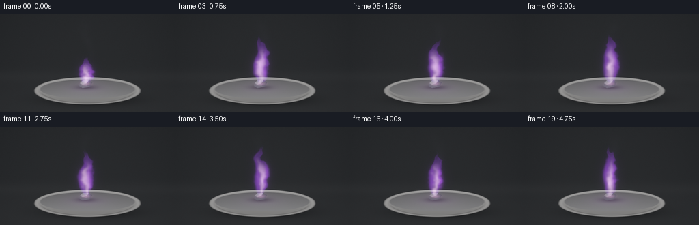
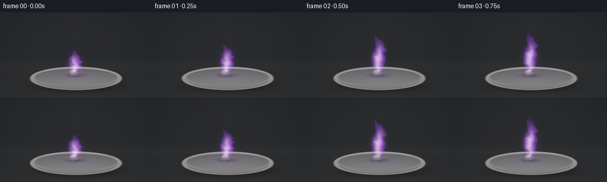

CODING AGENTS AS PIXEL WORLD MODELS
traex/GPT-6.1-Sol · phygen_130
点击播放 · 原生 RGB 像素
逐轮保存的候选
回放视频、检查图与代码变化。
每份候选均可单独播放。实际图片检查记录在下方工具轨迹中。
候选 01播放与检查图
点击播放 · 原生 RGB 像素


展开代码变化
--- 上一保存版本
+++ 本次保存版本
@@ -0,0 +1,151 @@
+"""Procedural close-up of a small burning potassium sample; no external assets."""
+from pathlib import Path
+import json
+import numpy as np
+from PIL import Image, ImageFilter
+import artifact_io
+
+ROOT = Path(__file__).resolve().parent
+SPEC = json.loads((ROOT / 'task_spec.json').read_text())
+W, H = SPEC['width'], SPEC['height']
+S = 3
+w, h = W*S, H*S
+Y, X = np.mgrid[0:h,0:w].astype(np.float32)/S
+rng = np.random.default_rng(130)
+noise_grid = rng.random((48,48,48)).astype(np.float32)
+
+def noise(x,y,z):
+ x,y,z = np.broadcast_arrays(x,y,z)
+ xi=np.floor(x).astype(np.int32); yi=np.floor(y).astype(np.int32); zi=np.floor(z).astype(np.int32)
+ xf=x-xi; yf=y-yi; zf=z-zi
+ xf=xf*xf*(3-2*xf); yf=yf*yf*(3-2*yf); zf=zf*zf*(3-2*zf)
+ v=np.zeros(x.shape,np.float32)
+ for dx in (0,1):
+ for dy in (0,1):
+ for dz in (0,1):
+ v += noise_grid[(xi+dx)%48,(yi+dy)%48,(zi+dz)%48] * (xf if dx else 1-xf)*(yf if dy else 1-yf)*(zf if dz else 1-zf)
+ return v
+
+def smooth(a,b,q):
+ r=np.clip((q-a)/(b-a),0,1)
+ return r*r*(3-2*r)
+
+# Dark defocused laboratory, neutral to make the lilac spectral flame legible.
+base=np.zeros((h,w,3),np.float32)
+vign=np.clip(1-((X-128)/190)**2-((Y-73)/145)**2,0,1)
+for c,val in enumerate([.042,.046,.051]):
+ base[:,:,c]=val+.019*vign + .015*smooth(64,144,Y)
+# Out-of-focus bench transition, without distractors.
+base += (.008*np.exp(-((Y-91)/8)**2))[:,:,None]
+tex=rng.normal(0,.0019,(h,w)).astype(np.float32)
+base+=tex[:,:,None]
+# Shallow off-white refractory dish: elliptical rim, curved basin, gentle shading.
+cy=112.0; a=78.0; b=20.0
+r=np.sqrt(((X-128)/a)**2+((Y-cy)/b)**2)
+shadow=np.exp(-(((X-132)/84)**2+((Y-125)/12)**2)*2)*.75
+base*=1-shadow[:,:,None]
+mask=1-smooth(.97,1.015,r)
+bodyshade=.38+.22*np.clip((cy+19-Y)/40,0,1)
+bodycol=np.stack([bodyshade*1.02,bodyshade*1.01,bodyshade],axis=-1)
+base=base*(1-mask[:,:,None])+bodycol*mask[:,:,None]
+# Broad rolled rim and darker inner basin.
+ri=np.sqrt(((X-128)/70)**2+((Y-109.6)/14.1)**2)
+inner=1-smooth(.97,1.015,ri)
+shade=.245+.15*np.clip((Y-97)/25,0,1)+.025*np.cos((X-130)/60)
+porcelain=np.stack([shade*1.015,shade*1.012,shade*1.035],axis=-1)
+porcelain+=tex[:,:,None]*1.9
+base=base*(1-inner[:,:,None])+porcelain*inner[:,:,None]
+rim=np.exp(-((r-.947)/.029)**2)*.115
+rim*=.45+.55*smooth(101,130,Y)
+base+=rim[:,:,None]*np.array([1.02,1.01,1.0])
+# Thin curved front-lip detail.
+front=np.exp(-((r-.88)/.018)**2)*smooth(113,120,Y)*.105
+base-=front[:,:,None]
+# Soot/oxidation confined immediately under the specimen.
+soot=np.exp(-(((X-126)/16)**2+((Y-107)/3.4)**2))*inner
+base*=1-.53*soot[:,:,None]
+
+# A single irregular, silver-grey metal piece; masks are supersampled.
+def polygon_mask(points):
+ im=Image.new('L',(w,h)); from PIL import ImageDraw
+ ImageDraw.Draw(im).polygon([(int(px*S),int(py*S)) for px,py in points],fill=255)
+ return np.asarray(im,dtype=np.float32)/255
+
+metal_masks=[polygon_mask([(117,101),(121,97),(130,97),(135,100),(132,106),(121,108),(116,105)]),
+ polygon_mask([(117,101),(121,97),(130,97),(127,101),(121,103)]),
+ polygon_mask([(127,101),(130,97),(135,100),(132,106),(128,105)])]
+
+# Small framed region for the volumetric luminous gas.
+sl=np.s_[12*S:111*S,99*S:158*S]
+fx=X[sl]; fy=Y[sl]
+frames=[]
+for i in range(SPEC['frames']):
+ t=i/SPEC['fps']
+ frame=base.copy()
+ # Slow oxidation, the sample remains clearly a single solid object.
+ oxid=i/(SPEC['frames']-1)
+ for j,m in enumerate(metal_masks):
+ colors=[np.array([.32,.34,.36])*(1-.22*oxid),np.array([.59,.61,.63])*(1-.20*oxid),np.array([.22,.24,.26])]
+ grain=.90+.10*noise(X*.67,Y*.8,2.4)
+ col=colors[j][None,None,:]*grain[:,:,None]
+ frame=frame*(1-m[:,:,None])+col*m[:,:,None]
+ # Tiny incandescent contact point, reflecting the lilac flame onto metal.
+ hot=np.exp(-(((X-126)/6.1)**2+((Y-101.7)/2.5)**2))
+ frame+=hot[:,:,None]*np.array([.42,.22,.38])
+ height=(37+30*smooth(0,.70,t))*(1+.07*np.sin(t*4.3)+.025*np.cos(t*9))
+ q=(101-fy)/height
+ good=smooth(-.025,.045,q)*(1-smooth(.88,1.07,q))
+ width=(3.6+11.6*np.sin(np.clip(q,0,1)*np.pi)**.8)*(1-.63*np.clip(q,0,1))
+ centre=126+2.5*np.sin(q*6.5-t*3.9)*np.clip(q,0,1)+3.6*np.sin(q*10.0+t*2.8)*np.clip(q,0,1)**1.8
+ emiss=np.zeros((*q.shape,3),np.float32)
+ for z in np.linspace(-12,12,23):
+ # Buoyant turbulence: coherent structures travel upwards over time.
+ n1=noise((fx-104)*.145,q*8.8-t*2.5,z*.16+t*.25)
+ n2=noise(fx*.33,q*19-t*5.0,z*.32+1.7)
+ warp=(n1-.5)*6+(n2-.5)*2.4
+ dx=fx-centre+warp
+ dz=z+(noise(q*8-t*2.1,fx*.08,z*.10)-.5)*3.4
+ rad=np.sqrt((dx/np.maximum(width,1))**2+(dz/np.maximum(width*.62,1))**2)
+ boundary=rad+(n1-.5)*.36+(n2-.5)*.13
+ gas=(1-smooth(.66,1.14,boundary))*good
+ # Ragged, thin upper wisps instead of a rigid cone.
+ gas*=.62+.70*n1
+ shell=gas*(.15+.40*smooth(.3,.92,rad))
+ core=gas*(1-smooth(.05,.73,rad))*(1-smooth(.34,.85,q))
+ emiss += shell[:,:,None]*np.array([.066,.013,.143])[None,None,:]
+ emiss += core[:,:,None]*np.array([.155,.117,.128])[None,None,:]
+ # A second slender licking tongue intermittently separates and rejoins.
+ q2=(100-fy)/(height*.74)
+ cx2=132+4.0*np.sin(q2*4.4+t*3.2)*q2
+ tongue=np.exp(-((fx-cx2)/(1.8+1.8*np.sin(np.clip(q2,0,1)*np.pi)))**2)
+ tongue*=smooth(.10,.28,q2)*(1-smooth(.64,1.0,q2))*(.35+.12*np.sin(t*5))
+ emiss+=tongue[:,:,None]*np.array([.30,.062,.54])
+ # Linear luminous radiance; tone mapping retains pastel white hot center.
+ light=np.zeros((h,w,3),np.float32)
+ light[sl]=emiss
+ # Optical bloom is limited; visible flame has crisp small-scale filaments.
+ li=Image.fromarray(np.uint8(np.clip(light/3.5,0,1)*255))
+ bloom=np.asarray(li.filter(ImageFilter.GaussianBlur(3.1*S)),dtype=np.float32)/255*3.5
+ halo=np.asarray(li.filter(ImageFilter.GaussianBlur(8.2*S)),dtype=np.float32)/255*3.5
+ frame += light+bloom*.25+halo*.11
+ # Colored illumination of the basin, fading naturally with distance.
+ illum=np.exp(-(((X-126)/29)**2+((Y-108)/8)**2))*inner
+ strength=.09+.016*np.sin(t*7)
+ frame+=illum[:,:,None]*np.array([.62,.16,.92])*strength
+ # Subtle pale vapor above flame, turbulent, transparent against dark background.
+ smq=(75-Y)/71
+ scx=128+5*np.sin(smq*6-t*1.9)
+ smoke=np.exp(-((X-scx)/(3+np.clip(smq,0,1)*7))**2)
+ smoke*=smooth(.0,.30,smq)*(1-smooth(.72,1.05,smq))
+ smoke*=.007*(.4+noise(X*.10,Y*.10+t*1.0,8.))
+ frame+=smoke[:,:,None]*np.array([.7,.65,.85])
+ # Filmic highlight shoulder, and mild sensor grain.
+ frame=np.clip(frame,0,None)
+ frame=frame/(1+frame*.55)
+ frame=np.clip(frame,0,1)**(1/1.55)
+ grain=rng.normal(0,.0014,frame.shape[:2]).astype(np.float32)
+ frame=np.clip(frame+grain[:,:,None],0,1)
+ image=Image.fromarray(np.uint8(frame*255)).resize((W,H),Image.Resampling.LANCZOS)
+ frames.append(np.asarray(image))
+artifact_io.save(np.stack(frames).astype(np.uint8),ROOT)
+print('Saved',len(frames),'RGB frames at',W,H)
可观测工具轨迹
实际执行的命令与返回图片。
命令 1exit 0
/bin/bash -lc "ls -la && cat prompt.txt && printf '\\n--- RULES ---\\n' && cat GENERATION_RULES.md && printf '\\n--- SPEC ---\\n' && cat task_spec.json"
命令 2exit 0
/bin/bash -lc "cat artifact_io.py && python - <<'PY'
import numpy, PIL
print('numpy and PIL available')
PY"命令 3exit 0
/bin/bash -lc "cat > generate.py <<'PY'
\"\"\"Procedural close-up of a small burning potassium sample; no external assets.\"\"\"
from pathlib import Path
import json
import numpy as np
from PIL import Image, ImageFilter
import artifact_io
ROOT = Path(__file__).resolve().parent
SPEC = json.loads((ROOT / 'task_spec.json').read_text())
W, H = SPEC['width'], SPEC['height']
S = 3
w, h = W*S, H*S
Y, X = np.mgrid[0:h,0:w].astype(np.float32)/S
rng = np.random.default_rng(130)
noise_grid = rng.random((48,48,48)).astype(np.float32)
def noise(x,y,z):
x,y,z = np.broadcast_arrays(x,y,z)
xi=np.floor(x).astype(np.int32); yi=np.floor(y).astype(np.int32); zi=np.floor(z).astype(np.int32)
xf=x-xi; yf=y-yi; zf=z-zi
xf=xf*xf*(3-2*xf); yf=yf*yf*(3-2*yf); zf=zf*zf*(3-2*zf)
v=np.zeros(x.shape,np.float32)
for dx in (0,1):
for dy in (0,1):
for dz in (0,1):
v += noise_grid[(xi+dx)%48,(yi+dy)%48,(zi+dz)%48] * (xf if dx else 1-xf)*(yf if dy else 1-yf)*(zf if dz else 1-zf)
return v
def smooth(a,b,q):
r=np.clip((q-a)/(b-a),0,1)
return r*r*(3-2*r)
# Dark defocused laboratory, neutral to make the lilac spectral flame legible.
base=np.zeros((h,w,3),np.float32)
vign=np.clip(1-((X-128)/190)**2-((Y-73)/145)**2,0,1)
for c,val in enumerate([.042,.046,.051]):
base[:,:,c]=val+.019*vign + .015*smooth(64,144,Y)
# Out-of-focus bench transition, without distractors.
base += (.008*np.exp(-((Y-91)/8)**2))[:,:,None]
tex=rng.normal(0,.0019,(h,w)).astype(np.float32)
base+=tex[:,:,None]
# Shallow off-white refractory dish: elliptical rim, curved basin, gentle shading.
cy=112.0; a=78.0; b=20.0
r=np.sqrt(((X-128)/a)**2+((Y-cy)/b)**2)
shadow=np.exp(-(((X-132)/84)**2+((Y-125)/12)**2)*2)*.75
base*=1-shadow[:,:,None]
mask=1-smooth(.97,1.015,r)
bodyshade=.38+.22*np.clip((cy+19-Y)/40,0,1)
bodycol=np.stack([bodyshade*1.02,bodyshade*1.01,bodyshade],axis=-1)
base=base*(1-mask[:,:,None])+bodycol*mask[:,:,None]
# Broad rolled rim and darker inner basin.
ri=np.sqrt(((X-128)/70)**2+((Y-109.6)/14.1)**2)
inner=1-smooth(.97,1.015,ri)
shade=.245+.15*np.clip((Y-97)/25,0,1)+.025*np.cos((X-130)/60)
porcelain=np.stack([shade*1.015,shade*1.012,shade*1.035],axis=-1)
porcelain+=tex[:,:,None]*1.9
base=base*(1-inner[:,:,None])+porcelain*inner[:,:,None]
rim=np.exp(-((r-.947)/.029)**2)*.115
rim*=.45+.55*smooth(101,130,Y)
base+=rim[:,:,None]*np.array([1.02,1.01,1.0])
# Thin curved front-lip detail.
front=np.exp(-((r-.88)/.018)**2)*smooth(113,120,Y)*.105
base-=front[:,:,None]
# Soot/oxidation confined immediately under the specimen.
soot=np.exp(-(((X-126)/16)**2+((Y-107)/3.4)**2))*inner
base*=1-.53*soot[:,:,None]
# A single irregular, silver-grey metal piece; masks are supersampled.
def polygon_mask(points):
im=Image.new('L',(w,h)); from PIL import ImageDraw
ImageDraw.Draw(im).polygon([(int(px*S),int(py*S)) for px,py in points],fill=255)
return np.asarray(im,dtype=np.float32)/255
metal_masks=[polygon_mask([(117,101),(121,97),(130,97),(135,100),(132,106),(121,108),(116,105)]),
polygon_mask([(117,101),(121,97),(130,97),(127,101),(121,103)]),
polygon_mask([(127,101),(130,97),(135,100),(132,106),(128,105)])]
# Small framed region for the volumetric luminous gas.
sl=np.s_[12*S:111*S,99*S:158*S]
fx=X[sl]; fy=Y[sl]
frames=[]
for i in range(SPEC['frames']):
t=i/SPEC['fps']
frame=base.copy()
# Slow oxidation, the sample remains clearly a single solid object.
oxid=i/(SPEC['frames']-1)
for j,m in enumerate(metal_masks):
colors=[np.array([.32,.34,.36])*(1-.22*oxid),np.array([.59,.61,.63])*(1-.20*oxid),np.array([.22,.24,.26])]
grain=.90+.10*noise(X*.67,Y*.8,2.4)
col=colors[j][None,None,:]*grain[:,:,None]
frame=frame*(1-m[:,:,None])+col*m[:,:,None]
# Tiny incandescent contact point, reflecting the lilac flame onto metal.
hot=np.exp(-(((X-126)/6.1)**2+((Y-101.7)/2.5)**2))
frame+=hot[:,:,None]*np.array([.42,.22,.38])
height=(37+30*smooth(0,.70,t))*(1+.07*np.sin(t*4.3)+.025*np.cos(t*9))
q=(101-fy)/height
good=smooth(-.025,.045,q)*(1-smooth(.88,1.07,q))
width=(3.6+11.6*np.sin(np.clip(q,0,1)*np.pi)**.8)*(1-.63*np.clip(q,0,1))
centre=126+2.5*np.sin(q*6.5-t*3.9)*np.clip(q,0,1)+3.6*np.sin(q*10.0+t*2.8)*np.clip(q,0,1)**1.8
emiss=np.zeros((*q.shape,3),np.float32)
for z in np.linspace(-12,12,23):
# Buoyant turbulence: coherent structures travel upwards over time.
n1=noise((fx-104)*.145,q*8.8-t*2.5,z*.16+t*.25)
n2=noise(fx*.33,q*19-t*5.0,z*.32+1.7)
warp=(n1-.5)*6+(n2-.5)*2.4
dx=fx-centre+warp
dz=z+(noise(q*8-t*2.1,fx*.08,z*.10)-.5)*3.4
rad=np.sqrt((dx/np.maximum(width,1))**2+(dz/np.maximum(width*.62,1))**2)
boundary=rad+(n1-.5)*.36+(n2-.5)*.13
gas=(1-smooth(.66,1.14,boundary))*good
# Ragged, thin upper wisps instead of a rigid cone.
gas*=.62+.70*n1
shell=gas*(.15+.40*smooth(.3,.92,rad))
core=gas*(1-smooth(.05,.73,rad))*(1-smooth(.34,.85,q))
emiss += shell[:,:,None]*np.array([.066,.013,.143])[None,None,:]
emiss += core[:,:,None]*np.array([.155,.117,.128])[None,None,:]
# A second slender licking tongue intermittently separates and rejoins.
q2=(100-fy)/(height*.74)
cx2=132+4.0*np.sin(q2*4.4+t*3.2)*q2
tongue=np.exp(-((fx-cx2)/(1.8+1.8*np.sin(np.clip(q2,0,1)*np.pi)))**2)
tongue*=smooth(.10,.28,q2)*(1-smooth(.64,1.0,q2))*(.35+.12*np.sin(t*5))
emiss+=tongue[:,:,None]*np.array([.30,.062,.54])
# Linear luminous radiance; tone mapping retains pastel white hot center.
light=np.zeros((h,w,3),np.float32)
light[sl]=emiss
# Optical bloom is limited; visible flame has crisp small-scale filaments.
li=Image.fromarray(np.uint8(np.clip(light/3.5,0,1)*255))
bloom=np.asarray(li.filter(ImageFilter.GaussianBlur(3.1*S)),dtype=np.float32)/255*3.5
halo=np.asarray(li.filter(ImageFilter.GaussianBlur(8.2*S)),dtype=np.float32)/255*3.5
frame += light+bloom*.25+halo*.11
# Colored illumination of the basin, fading naturally with distance.
illum=np.exp(-(((X-126)/29)**2+((Y-108)/8)**2))*inner
strength=.09+.016*np.sin(t*7)
frame+=illum[:,:,None]*np.array([.62,.16,.92])*strength
# Subtle pale vapor above flame, turbulent, transparent against dark background.
smq=(75-Y)/71
scx=128+5*np.sin(smq*6-t*1.9)
smoke=np.exp(-((X-scx)/(3+np.clip(smq,0,1)*7))**2)
smoke*=smooth(.0,.30,smq)*(1-smooth(.72,1.05,smq))
smoke*=.007*(.4+noise(X*.10,Y*.10+t*1.0,8.))
frame+=smoke[:,:,None]*np.array([.7,.65,.85])
# Filmic highlight shoulder, and mild sensor grain.
frame=np.clip(frame,0,None)
frame=frame/(1+frame*.55)
frame=np.clip(frame,0,1)**(1/1.55)
grain=rng.normal(0,.0014,frame.shape[:2]).astype(np.float32)
frame=np.clip(frame+grain[:,:,None],0,1)
image=Image.fromarray(np.uint8(frame*255)).resize((W,H),Image.Resampling.LANCZOS)
frames.append(np.asarray(image))
artifact_io.save(np.stack(frames).astype(np.uint8),ROOT)
print('Saved',len(frames),'RGB frames at',W,H)
PY
python generate.py"命令 4exit 0
/bin/bash -lc "python - <<'PY'
from pathlib import Path
import numpy as np
p=Path('.')
a=np.load(p/'pixels.npz')['pixels']
assert a.shape == (144,256,20)
assert len(list((p/'frames').glob('*.png')))==20
for name in ['generate.py','pixels.npz','index.html','inspection.png','transition_check.png']:
f=p/name
assert f.exists() and f.stat().st_size
print(name, f.stat().st_size, 'bytes')
PY"视觉工具实际返回图片 1

保存候选 1 份；完成命令 4 次；可验证图片返回 1 张。原始 API 响应与完整日志保留在本地。